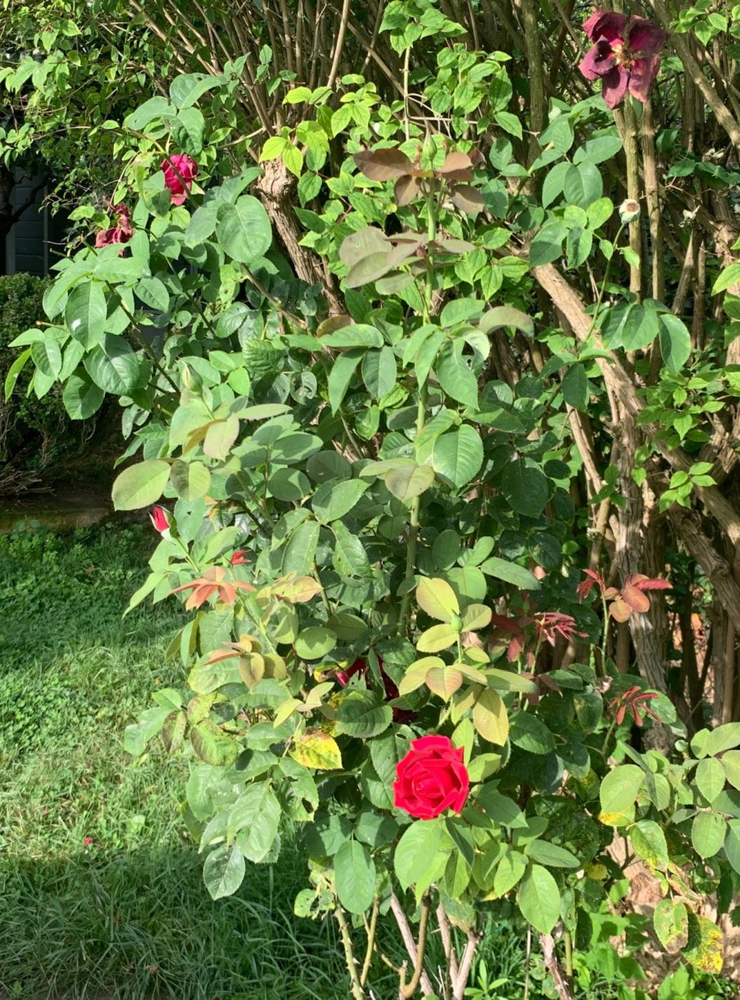
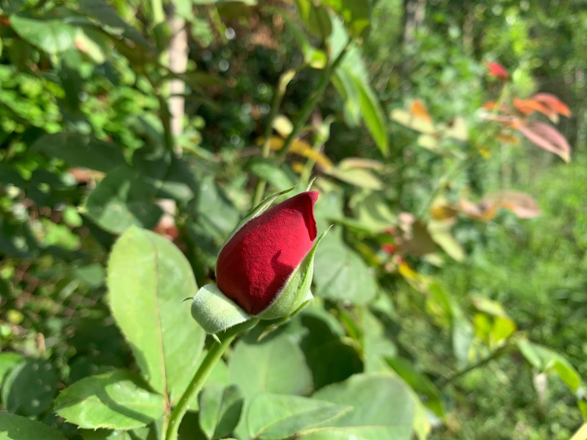
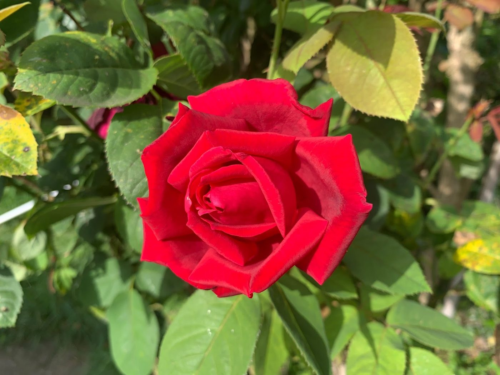
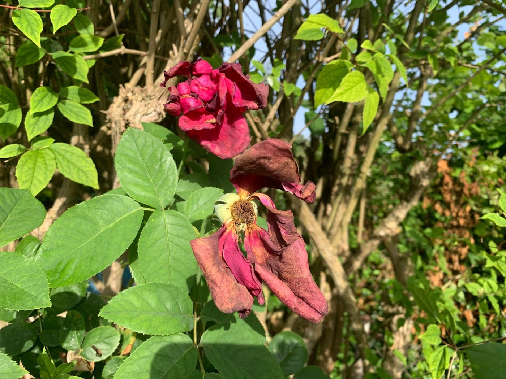

Observando el rosal de la huerta de mi familia, di forma a una metáfora que hoy utilizo en mi trabajo con muchas personas. No es un recurso teórico ni una técnica aislada: es una forma de mirar juntos lo que te ocurre, desde la confianza, la presencia y la colaboración activa.
Quiero compartirla contigo.
Esta metáfora ofrece un marco para explorar los desafíos de tu vida cotidiana y abordar las barreras que aparecen en tu día a día — esas que surgen cuando respondes a la inseguridad, a la incertidumbre, al miedo, a la culpa, a la preocupación, a la tristeza, a la necesidad de aceptación externa, al perfeccionismo, a la autocrítica...
Eres una persona única, y el proceso se adapta y se flexibiliza a cada uno de tus contextos.
La metáfora del rosal es una herramienta poderosa, un ejemplo. Es solo una parte del proceso de enseñanza y aprendizaje de nuevas respuestas, de nuevas conductas.
Al invitarte a visualizar tu vida como un rosal en constante evolución, facilito la comprensión de tus procesos y comportamientos internos — pensamientos, emociones, sensaciones, recuerdos — y la aceptación de tus diversas experiencias.
El ejercicio
Cierra los ojos.
Siente tu respiración.
Toma conciencia de tu cuerpo y de tus apoyos en el sofá.
Escucha los sonidos que te rodean.
Observa tus pensamientos, deja que se vayan y vuelve a concentrarte en tus sentidos: lo que ahora escuchas, tocas... en tu respiración.
En la huerta de mi familia tenemos un rosal; el de las fotografías.
No es un rosal especial. En lo fundamental es como otros rosales. La diferencia es el contexto. La especificidad de la tierra, el clima, la fauna y flora que le rodea. Los cuidados que mi familia le provee.
Pero en lo fundamental es como los millones de rosales que pueblan la tierra.
Imagina ahora un rosal, el rosal de tu vida. Visualízate, desde pequeño, como un rosal en constante crecimiento y cambio: primero en una maceta pequeña, después en una más grande, y finalmente plantado en la tierra.
Observa tus pensamientos, tus emociones y tus sensaciones corporales sin enjuiciarlos, sin luchar contra ellos si son dolorosos y sin intentar retenerlos si son satisfactorios; déjalos ir como las gotas de lluvia que resbalan por las hojas del rosal. Como las nubes que surcan tu cielo. Como hojas que se deslizan por tu río.
Observa el rosal con distancia. De abajo a arriba, de arriba a abajo, de un lado a otro... siempre es el mismo rosal, siempre eres tú.
Todo convive en tu rosal

En tu rosal, en ti, más allá de los cambios de clima o las plagas de pulgones, conviven capullos que están a punto de abrirse, rosas en su máximo esplendor y fragancia, y rosas que van perdiendo sus pétalos.
Toma perspectiva: tú eres más que la suma de todas las partes del rosal.
Tú convives con la lluvia, con el sol, con los insectos, con las abejas, te interrelacionas con ellos y tú eres el rosal.
Además, aunque no es lo que más llame la atención, puedes ver sus hojas, sus tallos con espinas e imaginar, dentro de la tierra, sus raíces, absorbiendo los nutrientes.
También puedes observar ramas que están secas.
Tuvieron su función en otros momentos, en otros contextos, quizás en tu infancia, quizás en la adolescencia... y, ahora, ya no pueden producir rosas. No se pueden cambiar por mucho que lo intentemos; como sucede con las reglas limitantes e inflexibles con las que los seres humanos nos conducimos en ocasiones.
Igual que no podemos cambiar el clima, la intencionalidad de las abejas que se posan en nuestras flores, los insectos o animales que quieren comerse nuestras hojas.
Las ramas secas
Tus reglas limitantes son las ramas secas en un rosal hermoso.
Si solamente fijas tu mirada en cada rama seca, puede impedirte disfrutar de las otras flores y de la belleza del rosal completo.
Y quizás te olvides de tus raíces.
Todas las partes del rosal han tenido y tienen su función.
Cada parte tiene su significado

Los capullos representan las potencialidades y esperanzas que aún no se han desarrollado completamente. Son las partes de nosotros mismos y de nuestras vidas que están en proceso de crecimiento y evolución: nuevos intereses, nuevas habilidades, nuevas relaciones.
Los tallos, las ramas vigorosas, son las reglas flexibles, facilitadoras que continúan creciendo poco a poco, llevando nutrientes a los capullos y a las rosas... y a toda la planta. Siempre estamos creciendo; siempre aprendiendo. Siempre puedes aprender nuevas conductas para cambiar.

Las rosas en pleno esplendor simbolizan tus momentos de plenitud y éxito, las experiencias y aspectos de tu vida que están en su mejor momento. Estas rosas son tus fortalezas, logros y momentos en los que sientes que caminas con la brújula de tus valores, de lo que verdaderamente te importa.
Las rosas que pierden sus pétalos representan las pérdidas, el envejecimiento y el cambio inevitable. Las puedes contemplar sin perder la perspectiva del crecimiento de toda tu planta. Sin perder de vista tus anhelos, tu camino hacia la vida que deseas vivir. Las raíces, los tallos, las espinas siguen funcionando.
Las espinas simbolizan tus respuestas, tanto de tu cuerpo como de tu mente, ante las amenazas, los retos, las dificultades y los momentos en los que pierdes seguridad o sales de tu zona de confort. Estas espinas te protegen para sobrevivir. Un rosal sin espinas moriría, ya que son una respuesta adaptativa y facilitante que surge flexiblemente alrededor del tallo.
Un exceso de espinas, o unas espinas demasiado pronunciadas, también dificultarían el crecimiento y desarrollo de capullos. En el contexto actual, nuestras respuestas automáticas de miedo y ansiedad pueden convertirse en este exceso de espinas, que limitan nuestro crecimiento y disfrute de la vida. Estas espinas adicionales representan nuestros bucles de pensamientos y emociones que nos mantienen enfocados en amenazas potenciales, impidiendo que florezcan nuestros capullos de potencialidades y esperanzas.

Las rosas marchitas son tus experiencias de dolor, de desapego, los aspectos de nosotros mismos que estamos dejando atrás y las transformaciones que atravesamos mientras continuamos caminando día a día. Sus pétalos caerán solos, pasarán. Tu crecimiento no se detiene y tus capullos necesitan toda tu concentración y dedicación.
Nutrir los capullos
Podemos centrar nuestra atención en nutrir los capullos y las rosas en pleno esplendor, a través de nuestros tallos verdes, simbolizando nuestras fortalezas, logros y momentos de plenitud, mientras reconocemos que las ramas secas, las rosas marchitas, las hojas secas, forman parte de nuestra historia y evolución, y no deben definir nuestro presente ni limitar nuestro futuro.
Lo que trabajamos juntos a partir de aquí
En el proceso de enseñanza y aprendizaje de nuevas conductas, a través de paradojas, ejercicios experienciales y metáforas como esta, enfatizo la aceptación de todas las partes de tu experiencia, reconociendo que tanto el florecimiento como la caída son partes naturales de la vida.
La vida conlleva desafíos y retos, y para prepararnos ante ellos, nuestro cuerpo y nuestra mente se preparan, actúan y se activan de forma natural.
Te guío para que estés presente no solamente en algunas partes del rosal, sino en su conjunto.
Conmigo aprenderás progresivamente a:
- Tomar conciencia de que tus relaciones y significados cambian con el tiempo; que la relación entre los pensamientos, las emociones y tu manera de interrelacionarte con distintas personas y en distintos contextos es aprendida y arbitraria.
- Verbalizar tus reglas de forma clara y precisa, tanto las limitantes como las facilitadoras.
- Explorar las emociones que surgen cuando se activa cada regla.
- Examinar las consecuencias a corto y largo plazo de mantener esa regla.
- Identificar tus valores más profundos y explorar cómo tus conductas consecuentes con esa regla se alinean o no con esos valores.
- Comprometerte con acciones alineadas con tus valores, incluso si la regla sigue presente; incluso cuando surjan pensamientos, emociones y sensaciones difíciles y dolorosas.
- Tomar distancia de la regla, observándola como un pensamiento más — que no se puede cambiar — y no como una verdad absoluta.
Aprenderás a mantener una perspectiva flexible y abierta ante los cambios, con la perspectiva de crecimiento hacia la vida que deseas vivir.
Tu vida cotidiana como rosal
Considera ahora tus desempeños en el día a día como la vida cotidiana de un rosal. En ti coexisten momentos de inicio, de plenitud y de declive:
Cuando estás en el escenario, con tus compañeros de trabajo, con tu familia, cuando tienes que hablar en público, cuando afrontas un reto imprevisto, cuando alguien te ha causado mucho dolor, cuando has tenido una pérdida, cuando has tenido éxito, cuando te sientes satisfecho y una persona afortunada...
Tus hojas, tus tallos, tus espinas y tus raíces tienen su función, sus objetivos y sus valores, en la perspectiva del crecimiento de toda la planta, más allá de las propias rosas.
Al hacerlo, desarrollas una mayor compasión hacia ti mismo y hacia los demás, y encontrarás progresivamente un equilibrio entre apreciar lo que es hermoso y aceptar lo que se desvanece, discerniendo las consecuencias de tus conductas a corto y a largo plazo, con la brújula de tus valores, del crecimiento de tu rosal.
Cuando la lucha te aleja del crecimiento
Cuando respondes al miedo, a la tristeza, a la ansiedad u otro dolor con reglas que te incitan a luchar, controlar o evitar, tiendes a centrarte en las rosas marchitas (tus pensamientos y emociones negativos), en las espinas (tus mecanismos de defensa) y en las ramas secas (tus recuerdos, tus viejas reglas), y a olvidar los capullos (tus potenciales y tus valores) y la belleza del resto de la planta.
Si descuidas tus verdaderos valores, las raíces dejan de tomar los nutrientes y... tu perspectiva y tu brújula desaparecen, tu vida pierde progresivamente significado.
Tus raíces dejan de alimentarte y tus hojas poco a poco se marchitan, tus capullos no crecen y no ves a tu alrededor ni una rosa en su esplendor.
Luchar, controlar, evitar, procrastinar, la inactividad, la distracción te impiden estar presente, con atención plena, en vivir cada momento. Te desconcentran. Estas respuestas son una barrera para alcanzar tu máximo potencial. Limitan tu desempeño.
Puedes aprender a cuidar tu rosal
Puedes aprender a aceptar las rosas marchitas sin juzgarlas, como parte natural de la vida, y aprender de ellas.
Puedes aprender a desarrollar nuevas rosas a partir de tus capullos; puedes aprender a disfrutar de las rosas que están en pleno florecimiento.
Puedes experimentar cómo tus hojas cambian de color, cómo tus espinas se tornan esbeltas, cómo interactúas con las abejas, con los pajarillos, cómo disfrutas de los días de sol y cómo agradeces los días de lluvia.
Puedes aprender a responder a la ansiedad o a la tristeza natural de otro modo al que lo has hecho hasta este momento.
En lugar de responder en base a reglas rígidas y limitantes, puedes aprender a responder con reglas más flexibles y facilitadoras.
En el proceso de aceptación y flexibilidad, puedes aprender a convivir con tus emociones de amenaza, de miedo, sin dejar que dominen tu paisaje mental y te aparten de la realidad, de lo que haces con tus sentidos.
Puedes aprender a abrazar la ansiedad, experimentarla y vivir con ella una vida más plena y significativa, superando de este modo barreras en tu desempeño.
Al aprender a observar las espinas puedes reconocer su función protectora y adaptativa, pero también entender que, en exceso, pueden ser limitantes.
Al aprender a observar las ramas secas, con distancia y sin juzgar, podrás reconocer su función pasada y entender que ya no son tan necesarias en tu contexto actual.
Puedes empezar a podar estas ramas secas, no para eliminarlas completamente, sino para reducir su impacto negativo, permitiendo que el rosal de tu vida dirija más energía hacia el crecimiento de nuevas flores y el desarrollo de tus capacidades, y caminar conforme a tus valores.
José Javier